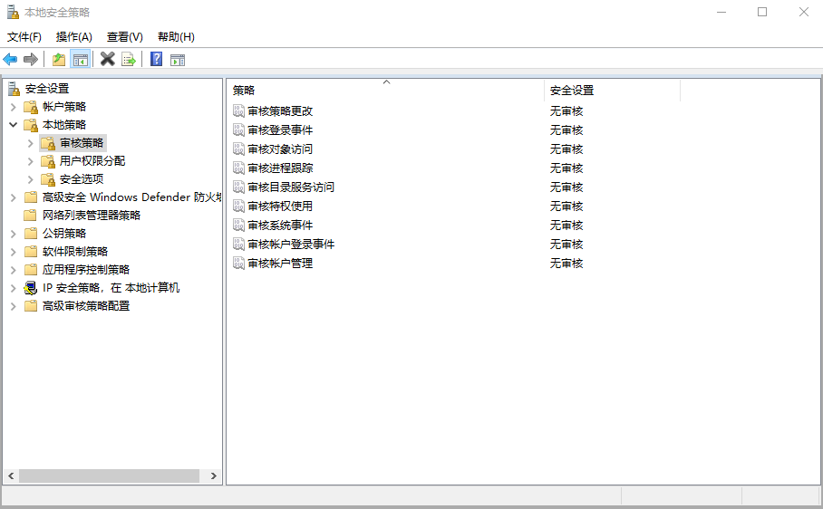
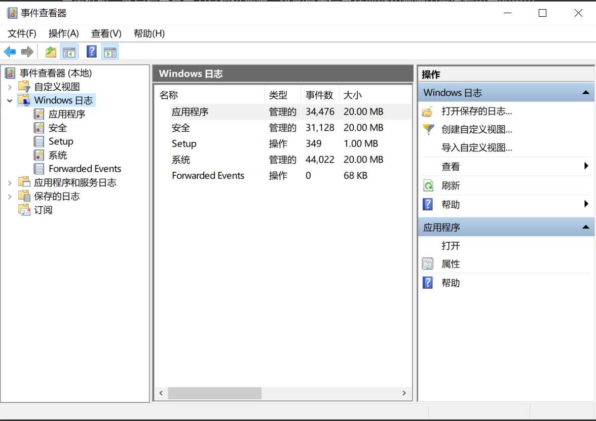
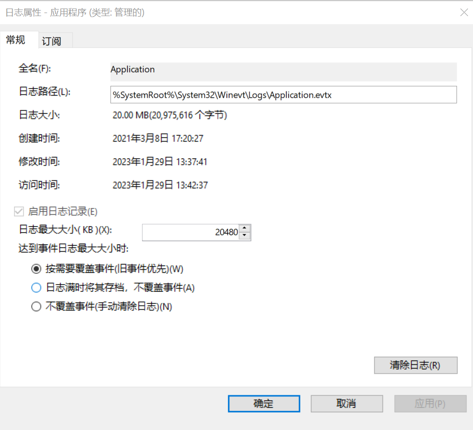
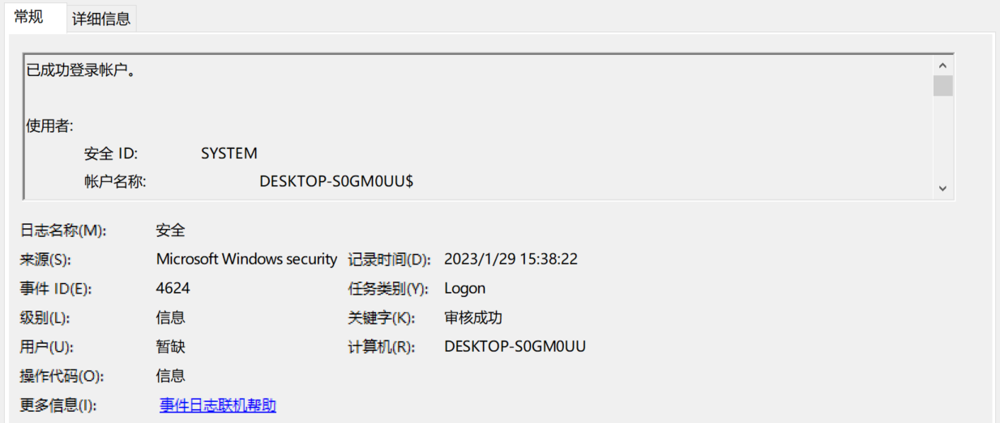

Windows日志学习
日志类型
Windows系统日志：记录系统中硬件、软件和系统问题的信息，同时还可以监视系统中发生的事件。用户可以通过它来检查错误发生的原因，或者寻找受到攻击时攻击者留下的痕迹。
Linux系统日志：记录linux系统运行中发生的各种类型的消息文件，包括 linux内核消息、用户登录消息、程序运行信息等。
应用日志：包括但不限于Web应用、应用程序等众多繁杂的日志。
Windows系统日志
Windows操作系统在其运行的生命周期中会记录其大量的日志信息，这些日志信息包括：Windows事件日志（Event Log），Windows服务器系统的IIS日志，FTP日志，Exchange Server邮件服务，MS SQL Server数据库日志等。处理应急事件时，客户提出需要为其提供溯源，这些日志信息在取证和溯源中扮演着重要的角色。
开启审核策略
运行 secpol.msc 可以打开本地安全策略，依次点开本地策略-审核策略。可以看到windows默认情况是没有开启审核策略的。不开启特定策略的话，Windows日志就不会记录某些事件，比如登录事件，进程创建事件等等。根据需要修改审核策略的属性，将全部审核操作选上成功和失败。
使用 管理员身份运行 以下bat打开全部策略
1 | |
日志分类
Windows系统的日志文件存放在 C:/windows/system32/winevt/logs 目录下。
Windows系统中自带事件查看器工具，它可以用来查看分析所有的Windows系统日志。运行 eventvwr 可以快速打开事件查看器。使用该工具可以看到系统日志被分为了两大类：Windows日志、应用程序和服务日志。
其中，Windows日志三个核心日志文件，分别是：
- 系统日志：System.evtx (系统组件等日志)
- 应用程序日志：Application.evtx (应用程序等日志)
- 安全日志：Security.evtx (系统登录等日志)
上述日志文件默认大小均为20480KB（20MB），记录事件数据超过20MB时，默认系统将优先覆盖过期的日志记录。
另外，应用程序和服务日志包含Windows系统中其它各类重要服务组件的事件日志。例如，Microsoft>Windows>TerminalServices-LocalSessionManager>Operational，记录了用户远程桌面的访问日志，可以通过该日志定位远程登录的相关问题。
大部分日志默认最大为1028KB，超过最大限制也优先覆盖过期的日志记录。
可以通过日志属性修改日志保存的大小，延长日志保存时间。《网络安全法》规定网络日志留存不少于六个月。
日志属性
Windows事件日志属性如下：
| 属性名 | 描述 |
|---|---|
| 日志名称 | 已记录事件的日志的名称 |
| 来源 | 记录事件的软件，可以是程序名，也可以是系统或大型程序的组件（如驱动程序名）。 |
| 记录时间 | 记录事件的日期和时间 |
| 事件ID | 标识特定事件类型的编号。 |
| 任务类别 | 用于表示事件发行者的子组件或活动。 |
| 级别 | 事件严重性的分类，包括信息、警告、错误、审核成功、审核失败。 |
| 关键字 | 可用于筛选或搜索事件的一组类别或标记。 |
| 用户 | 事件发生所代表的用户的名称。 |
| 计算机 | 发生事件的计算机的名称。 |
Windows 事件 ID详见 https://learn.microsoft.com/zh-cn/windows-server/identity/ad-ds/plan/appendix-l--events-to-monitor
常见的事件ID
| 事件ID | 说明 |
|---|---|
| 1102 | 清理审计日志 |
| 4624 | 账号登录成功 |
| 4625 | 账号登录失败 |
| 4634 | 账号注销成功 |
| 4647 | 用户启动的注销 |
| 4672 | 使用超级用户（如管理员）进行登录 |
| 4720 | 创建用户 |
| 4726 | 删除用户 |
| 4732 | 将成员添加到启用安全的本地组中 |
| 4733 | 将成员从启用安全的本地组中移除 |
| 4688 | 创建新进程 |
| 4689 | 结束进程 |
| 4698 | 创建计划任务 |
| 4699 | 删除计划任务 |
每个成功登录的事件都会标记一个登录类型，不同登录类型代表不同的方式：
| 登录类型 | 描述 | 说明 |
|---|---|---|
| 2 | 交互式登录（Interactive） | 用户在本地进行登录。 |
| 3 | 网络（Network） | 最常见的情况就是连接到共享文件夹或共享打印机时。 |
| 4 | 批处理（Batch） | 通常表明某计划任务启动。 |
| 5 | 服务（Service） | 每种服务都被配置在某个特定的用户账号下运行。 |
| 7 | 解锁（Unlock） | 屏保解锁。 |
| 8 | 网络明文（NetworkCleartext） | 登录的密码在网络上是通过明文传输的，如FTP。 |
| 9 | 新凭证（NewCredentials） | 使用带/Netonly参数的RUNAS命令运行一个程序。 |
| 10 | 远程交互（RemoteInteractive） | 通过终端服务、远程桌面或远程协助访问计算机。 |
| 11 | 缓存交互（CachedInteractive） | 以一个域用户登录而又没有域控制器可用 |
日志分析工具
Event Log Explorer
下载地址：https://event-log-explorer.en.softonic.com/
Event Log Explorer是一款非常好用的Windows日志分析工具。可用于查看，监视和分析跟事件记录，包括安全，系统，应用程序和其他微软Windows 的记录被记载的事件，其强大的过滤功能可以快速的过滤出有价值的信息。
Log Parser https://www.microsoft.com/en-us/download/details.aspx?id=24659
Windows日志分析的工具很多，个人感觉并没有什么区别，只是辅助分析的作用。事件查看器有时候就足够了。